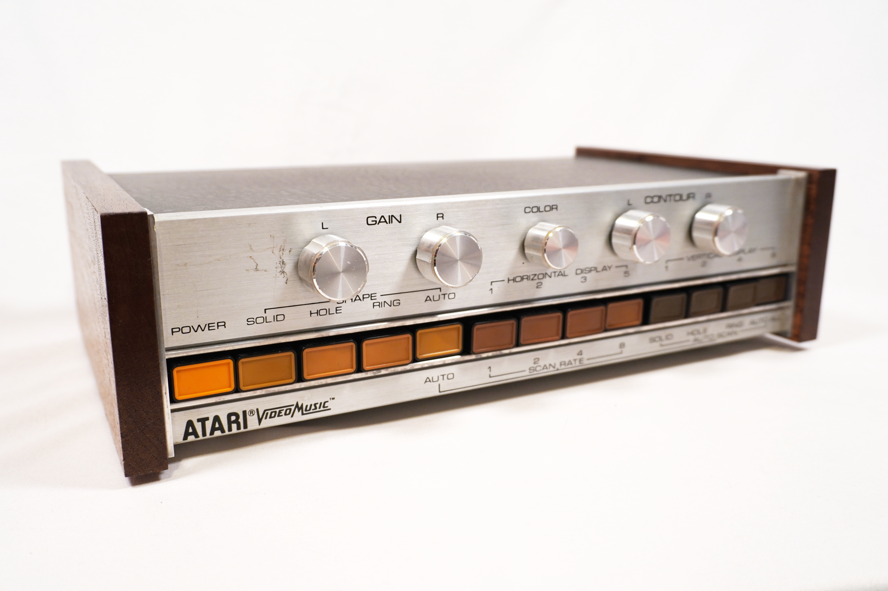
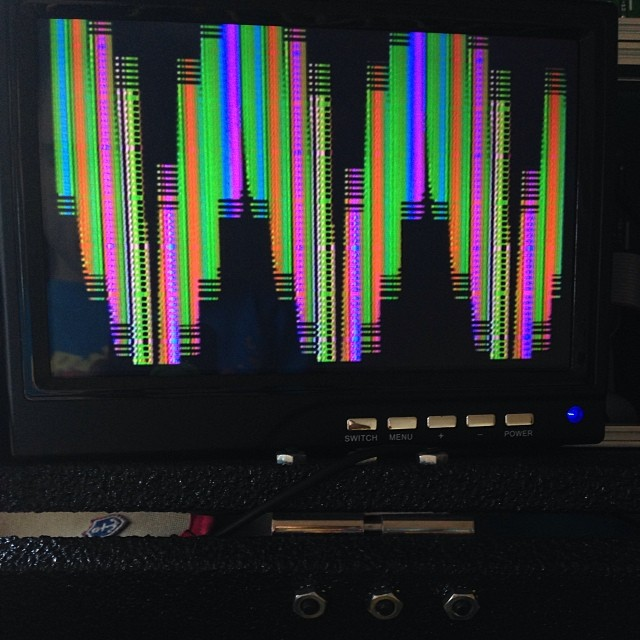

Atari Video Music / C-240
The first commercial music visualizer — five knobs and a walnut box that turned your stereo into abstract television

Overview
The Atari Video Music (Model C-240) is the earliest commercial electronic music visualizer ever released. Manufactured by Atari, Inc. and introduced in 1977 for $169.95 (roughly $900 in 2025 dollars), the device connects between a Hi-Fi stereo system and a television set. It interprets the left and right audio waveforms in real time through purely analog circuitry — there is no CPU, no software, no digital processing — and generates abstract, animated geometric color patterns on the TV screen that pulse, morph, and dance in response to the music.
The front panel is a brushed-metal face with five potentiometer knobs (two Gain controls for left/right channels, one Color control, and two Contour controls) plus twelve push-buttons that select shape modes (solid, hole, ring, auto) and multiplicity (1, 2, 3, or 5 horizontal images; 1, 2, 4, or 8 vertical images). The unit broadcasts on VHF channel 3 or 4, connecting through an RF switchbox that — unlike Atari's game consoles — included a pass-through F-connector so users didn't have to disconnect their TV antenna.
Developed under the codename Project Mood by Robert Brown (who also developed the home version of Pong), the Video Music was a commercial failure. It was discontinued after approximately one year on the market. According to Atari engineer Al Alcorn, during a promotional tour, a Sears representative asked what the developers were smoking when they came up with it — at which point a technician stepped forward holding up a lit joint. The device has appeared in music videos by Devo ("The Day My Baby Gave Me a Surprise," "Beautiful World") and Daft Punk ("Robot Rock").
Deep dive
The Video Music is an all-analog device. The left and right audio channels from a stereo amplifier enter through RCA jacks. Inside, the audio waveforms are processed through zero-crossing detectors, envelope followers, and analog multipliers. The system generates video signals by interpreting musical intensity (amplitude) and 'mellowness' (zero-crossing rate) and mapping them to visual parameters. The basic visual form is a two-part diamond: the outer diamond represents the left audio channel, and the inner diamond represents the right channel. The Gain knobs control how large each diamond appears. The Color knob increases the number of available colors from a single solid hue to a full rainbow — color is derived from the zero-crossing rate of each audio channel. The Contour knobs control the visual 'sharpness' of the shapes, from soft, organic blobs to rigid geometric forms. The Shape buttons select whether the diamonds appear as solid (filled), hole (one channel as outer shape with the other as a hole in the center), ring (both channels as outline shapes), or auto (cycling through modes). The multiplicity buttons control how many copies of the pattern appear on screen simultaneously — up to five across or eight down, or any combination. Because it operates on raw analog audio, any sound source works: a record player, a cassette deck, a live microphone, even the audio output of an Atari game console. The Video magazine review from 1978 noted that it could also be recorded to VCR using a balun converter, letting users create music visualization tapes — an idea that prefigures the entire YouTube music visualization genre by 30 years.
The Video Music was designed by Robert J. Brown, an Atari engineer who had previously worked on the home version of Pong. Brown filed US Patent 4,081,829 in 1978 for an "Audio activated video display," which describes the system's core architecture: extracting audio energy from stereo channels, using zero-crossing rates to derive color, and presenting the result as objects on an unmodified TV. This was Atari operating outside its core competency — not making a game, but making a new kind of consumer electronics device that turned sound into sight. It was part of a brief flurry of non-game Atari consumer products that included the Atari 2700 (a prototype wireless console), the Atari Cosmos (a holographic tabletop game), and the Atari Mindlink (an EEG-based controller, already in the museum). All of them failed commercially, but collectively they reveal an Atari that was willing to try almost anything.
Video magazine's 1978 "VideoTest Report" gave the device mild but positive marks, describing it as "a well-constructed machine and an interesting component to be used as an adjunct to stereo sound," but warned that "once the novelty wears off the display can become somewhat monotonous." The same report recommended it for "those who find it relaxing, stimulating, or therapeutic to watch psychedelic displays." The device was discontinued after roughly one year. It is unclear how many units were produced, but surviving examples are rare collector's items. Its legacy, however, is outsized: it established the concept of a dedicated consumer music visualization device, a category that would later explode with digital music players (iTunes Visualizer, 2001), media player plug-ins (MilkDrop, 2001), and — arguably — the entire genre of music-driven generative art. The fact that it was made by a game company, in a wooden box with walnut veneer, using zero digital processing, makes it a perfect artifact of its moment.
Team & pioneers
- Robert J. Brown. Designer and engineer; also developed the home version of Pong
- Atari, Inc.. Manufacturer, Sunnyvale, California
Media

Sources
- Wikipedia: Atari Video Music
- PC World (2016): "The Atari Video Music is a trippy, psychedelic rarity from the 1970s" by Benj Edwards
- US Patent 4,081,829 — "Audio activated video display" (Robert J. Brown, Atari, filed 1976, granted 1978)
- Video magazine, Vol. 1 No. 2 (Summer 1978): "VideoTest Report Number 7: Atari's Video Music"
- Al Alcorn interview — the joint anecdote (reprinted at landley.net)
- Atari Video Music restoration and history site